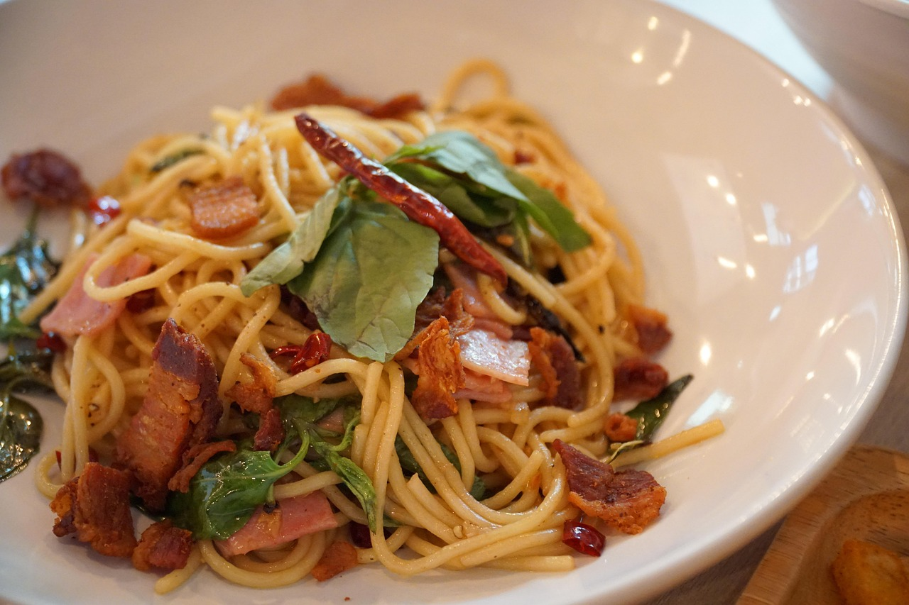

Rezept 1: Spaghetti Carbonara

- Wasser in einem großen Topf zum Kochen bringen und salzen.
- Spaghetti hinzufügen und al dente kochen.
- In einer Schüssel Eier mit geriebenem Parmesan verrühren.
- Speck in einer Pfanne knusprig braten.
- Spaghetti abgießen und mit Speck vermengen.
-
Eimischung schnell unterrühren, sodass eine cremige Sauce entsteht.
- Mit Pfeffer abschmecken und sofort servieren.
Rezept 2: Pfannkuchen

-
Mehl, Milch und Eier in einer Schüssel zu einem glatten Teig
verrühren.
- Eine Prise Salz und etwas Zucker hinzufügen.
- Etwas Öl in einer Pfanne erhitzen.
-
Eine Kelle Teig in die Pfanne geben und gleichmäßig verteilen.
- Pfannkuchen von beiden Seiten goldbraun backen.
-
Nach Belieben mit Marmelade, Apfelmus oder Zimt und Zucker
servieren.